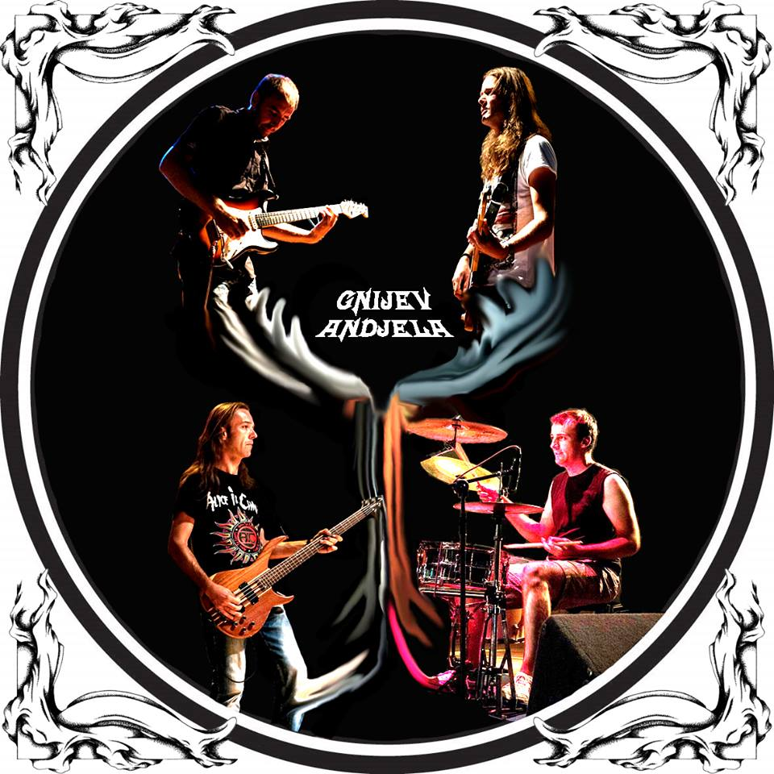

Bend je nastao još davne 1996. godine kad je sedamnaestogodišnji Branislav Šarac odlučio da napravi bend pod imenom „Arhej“. Pored Branislava u grupi su tada bili Rajko Ostojić na basu i Bato Banduka (R.I.P.) na bubnjevima. Iako je to bilo teško vrijeme za mlade rok muzičare, jer je bilo skoro nemoguće naći odgovarajuću muzičku opremu i prostor, Arhej počinje da radi svoje prve svirke u Bratuncu i regiji svirajući obrade proslavljenih rok imena. Nakon određenog perioda na mjesto bubnjara dolazi Pankso (R.I.P.) koji nije ostao dugo vremena da bi umjesto njega došao Miroslav Mandić - Mića koji je ostao do kraja postojanja grupe Arhej, nakon čega bend mijenja ime u Gnijev Andjela sa novom postavom. Sa novim imenom u novom milenijumu bend počinje sa studijskim snimanjem prvih autorskih stvari. Upečatljiva životna tematika koja se prožima u tekstovima upakovanim u energične rifove i melanhonične tonove, pjesme nalaze dobar odjek kod mnogobrojne publike, a ubrzo dolazi do velikih koncertnih aktivnosti po festivalima i klubovima u BiH i Srbiji. Tokom dugih godina postava Andjela se mnogo puta mijenjala. Članovi benda trenutno: -Branislav Šarac - vocal & guitar -Bogdan Prodanović - guitar -Dragoslav Šarac – bass
Gnijev Andjela
